Zumbis
Conheça os principais zumbis do jogo Plants vs. Zombies!
Dia
| Imagem | Nome | Descrição |
|---|---|---|
| 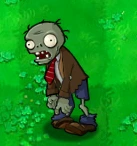 | Zumbi Comum | É o zumbi mais básico e está presente em todas as fases. Anda lentamente e é derrotado facilmente. Qualquer planta dá conta. Um Disparervilha já resolve. Você só precisa lembrar de plantar, né? |
| 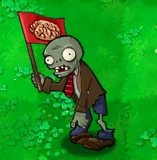 | Zumbi Bandeira | Um zumbi comum, porém, muito mais descolado com sua bandeira vermelha! Marca o início das grandes hordas. |
| 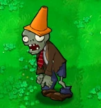 | Zumbi Cabeça de Cone | Usa um cone laranja que não está muito na moda... mas isso dá a ele mais resistência! Dois Disparervilhas devem dar conta do recado. |
| 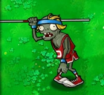 | Zumbi Saltador | Zumbi Seninha à vista! Salta sobre a primeira planta com sua vara, depois vira um zumbi comum. Posicione a planta mais barata que você tem à frente dele para acabar com o seu pique! |
| 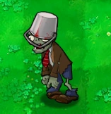 | Zumbi Cabeça de Balde | Esse esqueceu o guarda-sol no túmulo! Aguenta tiro que é uma beleza. A Planta Carnívora não se importa com gosto de aço. |
Noite
| Imagem | Nome | Descrição |
|---|---|---|
| 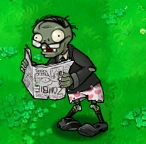 | Zumbi com Jornal | Um velhote que só queria ler o jornal em paz... até você rasgar a sua última edição. Aí ele vem que nem um raio! Gasogumelo consegue evitar o seu chilique. |
| 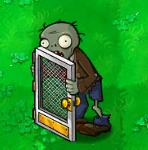 | Zumbi Porta de Tela | Usa uma porta de tela como escudo que provavelmente foi roubada da casa da vó. Bloqueia quase tudo, menos fumaça! Gasogumelo nele! |
| 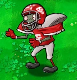 | Zumbi Quarterback | Rápido, resistente e com cara de quem perdeu o campeonato. Corre igual um caminhão desgovernado. Use um Gelervilha pra segurar o pique, ou use o Hipnogumelo para ele trocar de time. |
| 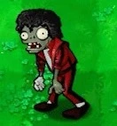 | Zumbi Dançarino (Original) | Um astro pop que ressuscita com passos de dança e chama os amigos. Hipnogumelo neles e você ganha uma boy band zumbi no seu time! |
| 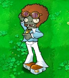 | Zumbi Dançarino (Atual) | Mesmo gingado, menos processo judicial. Ele ainda convoca os figurantes, então priorize o coreógrafo antes que a pista encha! |
| 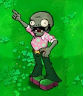 | Zumbi Figurante | Enquanto o astro dança, eles aparecem! Ignore os figurantes e foque no dançarino principal! Sem ele, o show acaba! |
Piscina
| Imagem | Nome | Descrição |
|---|---|---|
| 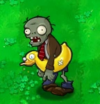 | Zumbi com Boia de Pato | Nada de especial, apenas um zumbi comum com uma boia de pato. |
| 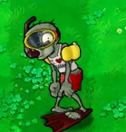 | Zumbi Mergulhador | Nossa!! Um zumbi aquático! Ah, na verdade ele só está usando uma máscara de mergulho. Ele fica submerso até sentir cheiro de planta. Use uma Alga-Envolvente para afogá-lo. |
| 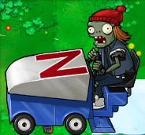 | Zumboni | Dirige um rolo compressor de gelo que esmaga tudo pela frente e transforma seu jardim numa pista de patinação! Experimente usar o Erva-Espinho para furar o pneu de seu carro, ou até mesmo uma Pimenta para acabar com ele e seu gelo. |
| 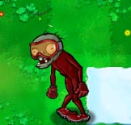 | Zumbi Time de Trenó | Um grupo de zumbis em um trenó! Eles só aparecem caso tenha gelo no mapa, então destrua o Zumboni o quanto antes! |
| 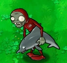 | Zumbi Golfileiro | Como esse maluco arranjou um golfinho zumbi!? Graças ao golfinho ele é muito rápido e salta por cima da planta à sua frente, porém ele não fará isso caso tenha uma Alga-Envolvente ou uma Noz-Alta em sua frente. |
Nevoeiro
| Imagem | Nome | Descrição |
|---|---|---|
| 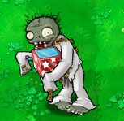 | Zumbi Caixa-surpresa | Uma caixa surpresa! Você o escutará quando ele estiver por perto. Melhor não esperar para ver o que têm na caixa, pode ser algo explosivo! Imãgumelo rouba a caixa e estraga a surpresa. |
| 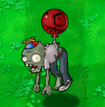 | Zumbi Balão | Com o seu super balão de festinha de aniversário, ele flutua por cima de tudo, que trapaceiro. O balão pode ser estourado facilmente com um Cacto! |
| 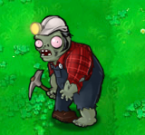 | Zumbi Escavador | Esse aqui cava até o final do mapa pra pegar suas plantas por trás! Um Bidisparervilha é perfeito para não ser flanqueado! Imãgumelo também acaba com sua escavação. |
| 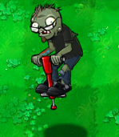 | Zumbi Pula-pula | Como ele consegue usar isso sendo que não possui cérebro? Ele fica pulando sobre todas as suas plantas, melhor acabar com ele o quanto antes! O Imãgumelo rouba o brinquedo dele para si. |
| 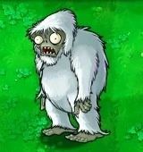 | Zumbi Yeti | Um zumbi raro, misterioso, amedrontador e... covarde! Ele tem medo de plantas. Se o encontrar, tire print! E tente derrotar antes que ele fuja, ele dá uma boa grana. |
Telhado
| Imagem | Nome | Descrição |
|---|---|---|
| 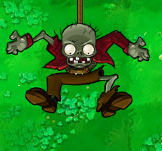 | Zumbi Cabo Elástico | IIIIIIHÁAA!!! Esse zumbi despenca do céu e rouba suas plantas sem pedir licença. Às vezes, em vez de pegar suas plantas, ele dá uma caroninha para outros zumbis e joga eles em cima delas! Use um Folha-Guarda-Chuva pra fazer ele decolar de volta na velocidade da luz! |
| 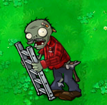 | Zumbi da Escada | Além de usar uma escada de ferro como escudo, ele também escala a primeira planta que encontrar. Outros zumbis podem aproveitar a escada depois. Imãgumelo rouba a escada dele e transforma esse valentão em peso morto. |
| 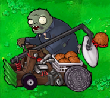 | Zumbi Catapulta | Esse aí comeu cérebros demais e achou que tava na NBA! Arremessa bolas de basquete nas plantas do fundo como se fossem cestas! Felizmente, a Folha-Guarda-Chuva rebate os arremessos com estilo. |
| 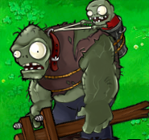 | Gargantuar | O Hulk da zumbilândia. Se eu fosse você, corria! Ele esmaga tudo no caminho e ainda joga um Imp de brinde. Use tudo que tiver, ou reze. A Pimenta transforma ele em cinzas ou, se você não gosta de pimentas, duas plantas Esmagadoras bem colocadas podem resolver. |
| 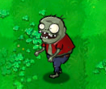 | Imp | Sozinho, é moleza. O problema é quando vem como brinde do Gargantuar. |
Telhado à Noite - Fase Final
| Imagem | Nome | Descrição |
|---|---|---|
| 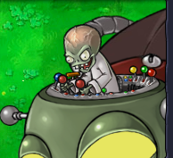 | Dr. Zomboss | Ao som de uma incrível música de fundo, chega o chefão final: o grande careca da destruição! Ele aparece pilotando um zumbi robô gigante, jogando bolas de gelo, de fogo e até zumbis em cima de você. Mas não entre em pânico! Use Pimentas nas bolas de gelo e Gelogumelos nas de fogo. E depois, jogue tudo o que tiver nele! Boa sorte! |